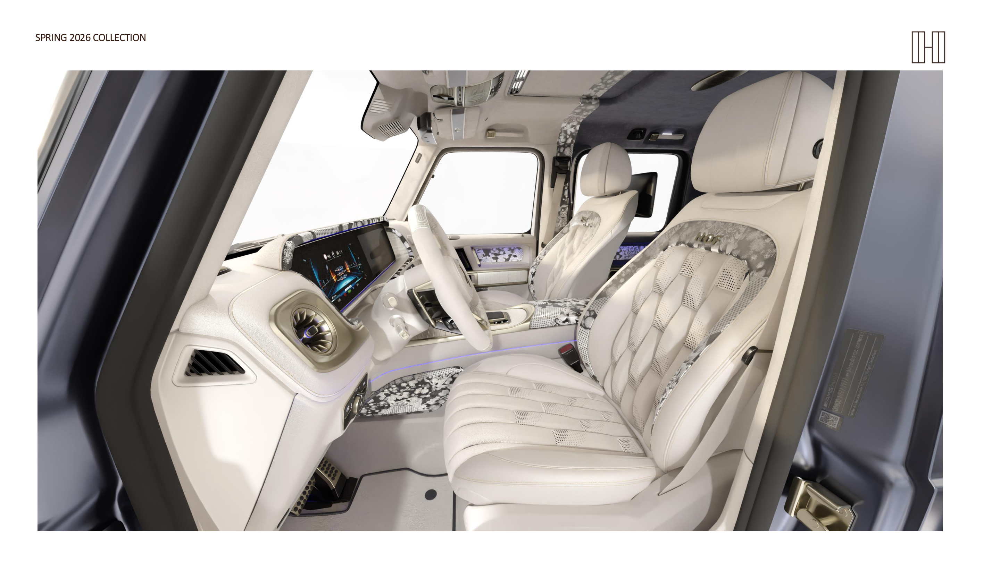
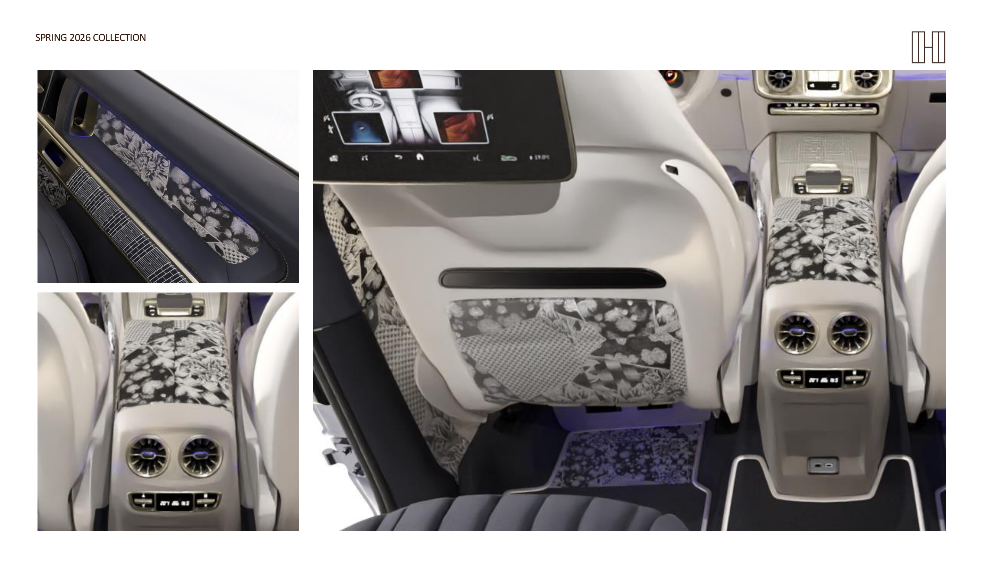

SPRING SUMMER 2026
Before the bloom
Prelude. Four compositions curated around the moment before bloom.
Explore the Collection
SPRING SUMMER 2026
Prelude. Four compositions curated around the moment before bloom.
Explore the CollectionSpring Summer 2026
Material speaks. Proportion speaks. The deliberate absence of everything unnecessary speaks loudest. This is the language of couture — applied to the automobile.
Four compositions, each curated around a single moment: the state before bloom. Tension without drama. Promise without noise.
The Collection
Collector Model · SS26
The season's defining composition. Parisian couture sensibility meets botanical precision. A tonal range between champagne and indigo, brought to life through satin finishes, botanical textile inserts, and hand-placed embroidery. A presence that arrives without announcement.
Explore PreludeThe Principle
Seasonal rhythm. Cultural intention. The hand over the machine. The singular over the serial. Haute couture's principles — applied to the automobile.
Each HOF is composed from a cultural reference, through material conviction, into a form that exists once. When the season ends, it's gone.
A HOF is not configured. It is recognised.
The Maison
Every HOF interior is completed by hand in our atelier in Sindelfingen. The discipline is tailoring — the structural kind. How a surface ages. How a seam falls under light. How an interior becomes warmer every year.
Materials are chosen for what they'll become. Time is the only finish that can't be applied.
The Atelier